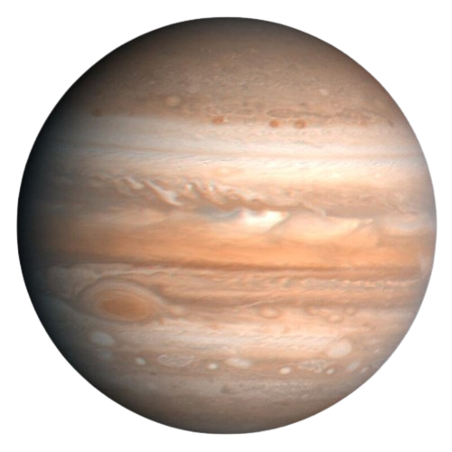

Jupiter


Jupiter
Jupiter je največji planet v našem sončnem sistemu. Podoben je zvezdi, vendar nikoli ni postal dovolj masiven, da bi začel goreti. Pokrito je s črtami vrtinčastega oblaka. Ima velike nevihte, kot je Velika rdeča pega, ki trajajo že stotine let. Jupiter je plinasti velikan in nima trdne površine. Še vedno ni jasno, ali ima Jupiter globlje v sebi osrednje jedro iz trdnega materiala ali pa gre morda za gosto, super vročo in gosto juho. Tudi Jupiter ima prstane, vendar so prešibki, da bi jih dobro videli.